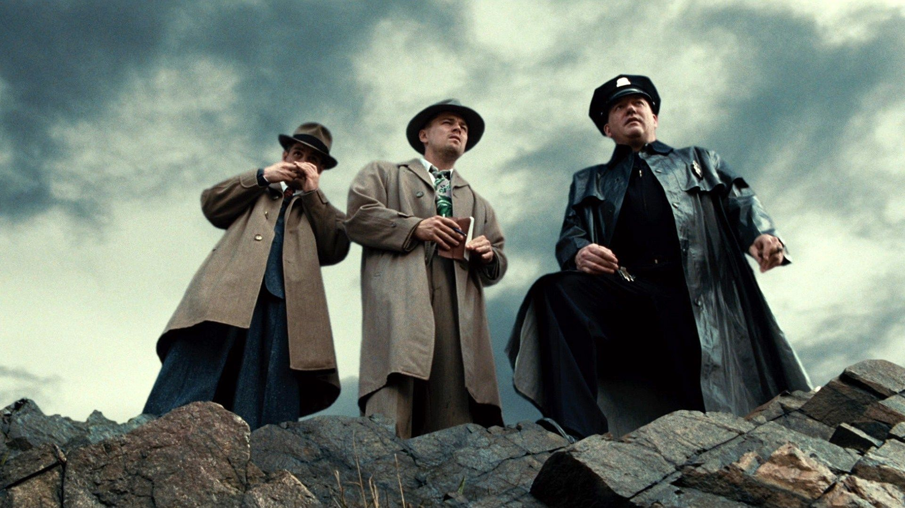

Sinopse
Ilha do Medo é um filme de suspense psicológico dirigido por Martin Scorsese e estrelado por Leonardo DiCaprio. A história se passa em 1954, quando o detetive Teddy Daniels é enviado para o Asilo Ashecliffe, localizado na ilha de Shutter, para investigar o desaparecimento de um paciente.
Galeria de Imagens
